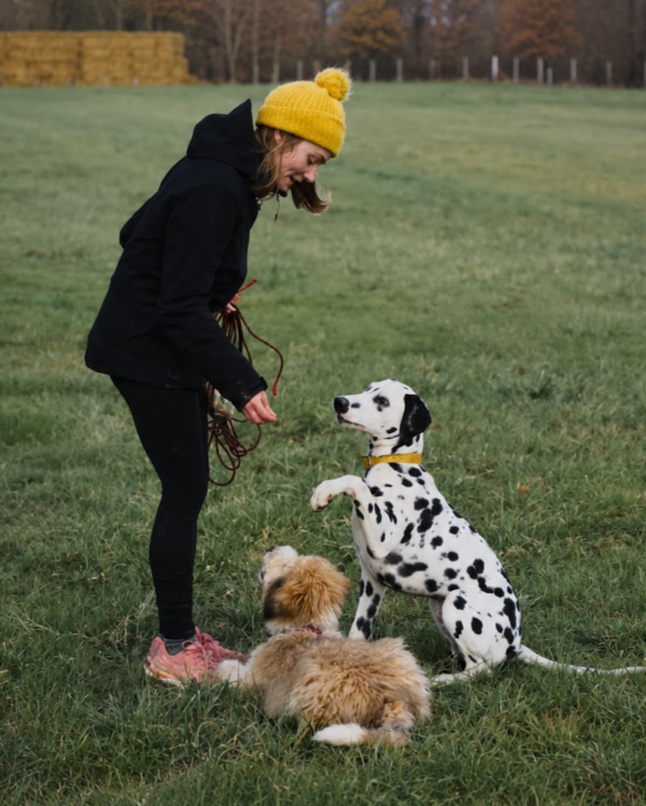
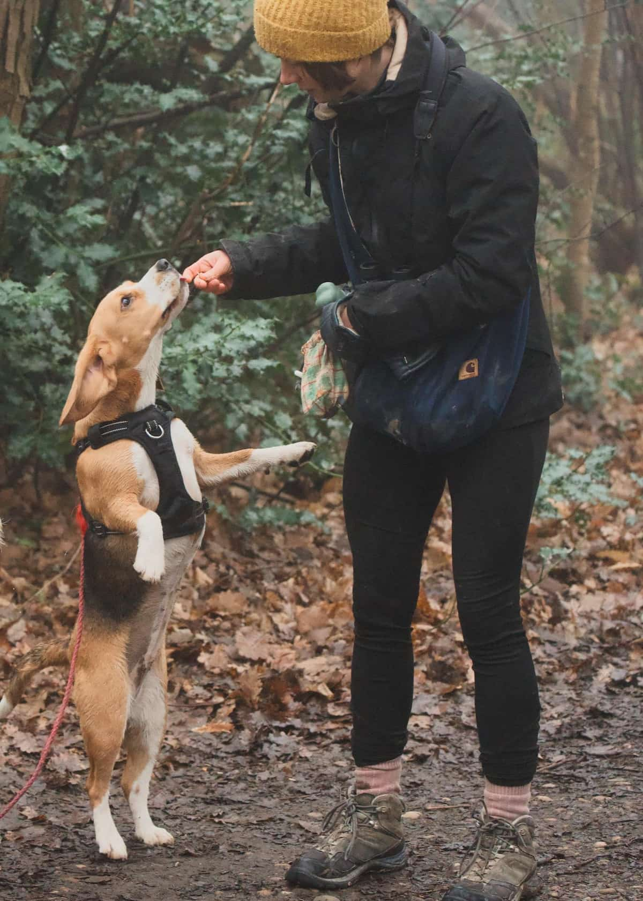
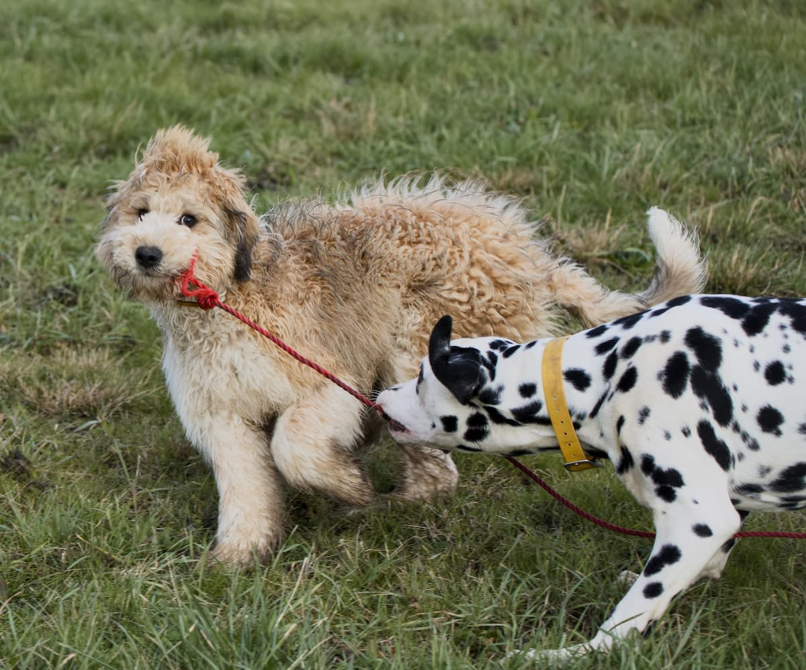
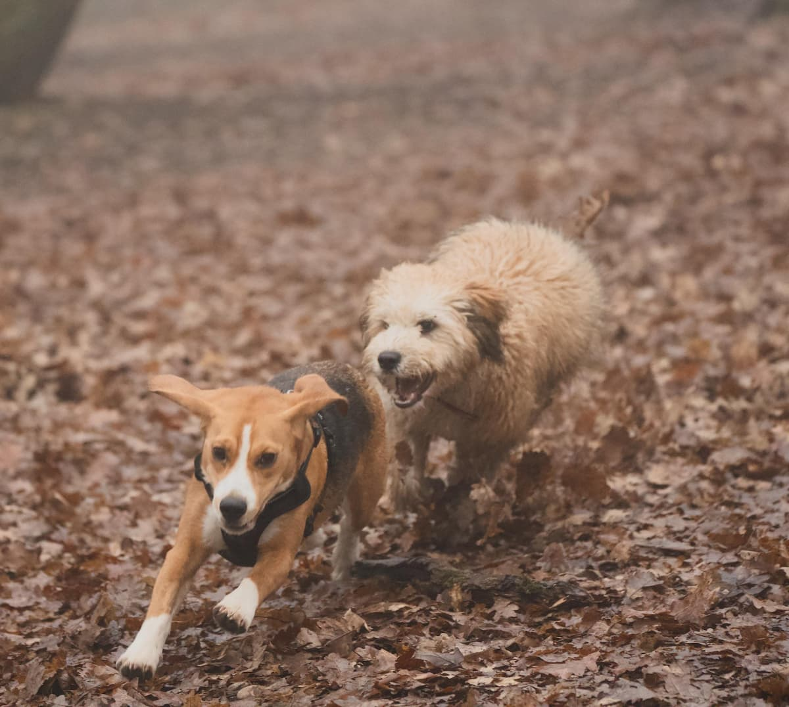
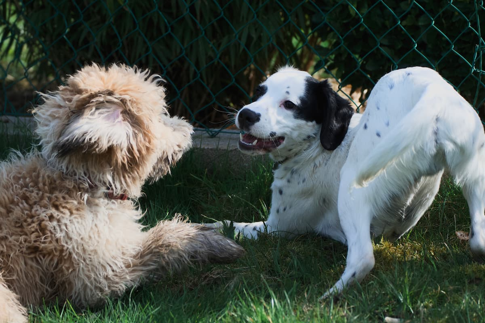
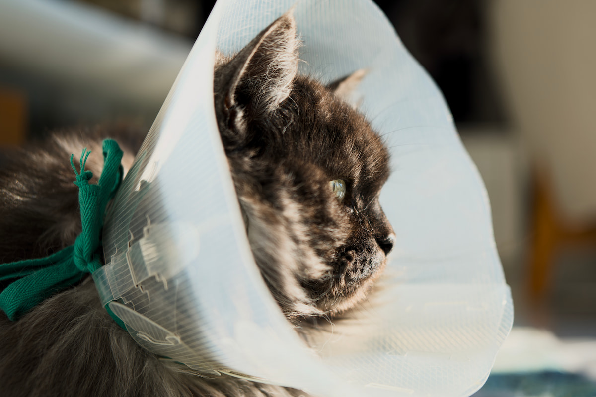
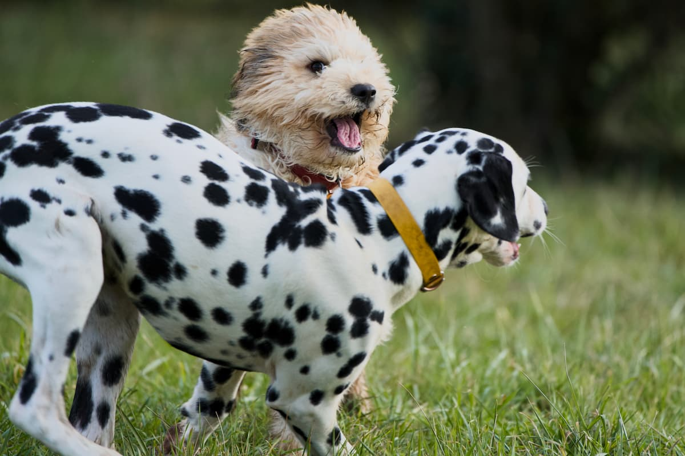

PET-SITTING DE L'OUEST LYONNAIS
PROMENADES ET VISITES À DOMICILE
QUI EST DARDIDOG ?
Passionnée par les animaux depuis toujours, j'ai commencé par garder chiens, chats et lapins à mon domicile de manière occasionnelle pour finalement décider de faire de cette passion mon métier à temps plein. Ingénieure reconvertie, j'ai suivi une formation en éducation canine positive qui me permet d'assurer un accompagnement de qualité, toujours bienveillant et adapté aux besoins spécifiques de chaque animal. Forte de cette expérience, j'étais enfin prête à adopter Selva, une jeune chienne croisée pleine d'énergie et très sociable, qui m'accompagne désormais autant que possible sur le terrain lors des promenades canines. Ensemble, nous accueillons chaque animal avec toute l'attention, la patience et l'affection qu'il mérite.


LES ENGAGEMENTS DARDIDOG
- Première rencontre gratuite Faites connaissance avec moi sans engagement financier
- Aucun frais kilométriques Les tarifs affichés sont ceux appliqués
- Suivi régulier Photos et nouvelles à la fréquence souhaitée
- Passion et professionnalisme Un service de qualité personnalisé et adapté aux besoins de chaque animal
POURQUOI FAIRE APPEL À DARDIDOG ?
Vous craignez que votre chien s'ennuie
Vous êtes soucieux du bien être de votre chien et vous craignez qu'il s'ennuie ou se sente seul pendant vos longues journées d'absence ? Offrez-lui un peu de compagnie le temps d'une visite à domicile ou d'une promenade en pleine nature entre copains ou juste avec moi ! Au programme : jeux, exercices, câlins, rencontre avec des congénères... Chaque chien est unique : je m'adapte au mieux à ses besoins comme aux vôtres, afin de lui offrir l'expérience la plus positive possible.
Votre chien a des troubles comportementaux
Votre chien détruit, tourne en rond, creuse des trous dans le jardin ou aboie sur tout ce qui bouge ? Dans bien des cas, ces comportements peuvent être dus ou amplifiés par un manque de stimulation lié à des sorties trop rares, trop courtes ou trop monotones.
Le jardin, aussi grand soit-il, n'offre pas la richesse d'expériences nécessaires à l'équilibre mental d'un chien. Ce dont votre compagnon a réellement besoin, c'est de découvrir de nouveaux endroits, sentir des odeurs inédites, rencontrer d'autres congénères et vivre des expériences variées. Augmenter la fréquence et la durée des sorties, tout en diversifiant les lieux de promenades, peut considérablement améliorer certains troubles comportementaux. Un chien dont les besoins sont assouvis est un chien apaisé qui fera moins de bêtises.
Entre les contraintes professionnelles, familiales et personnelles, il n'est pas toujours facile d'offrir à son chien toute la stimulation dont il a besoin. C'est là que Dardidog intervient pour proposer à votre compagnon des sorties variées et enrichissantes, faites de jeux, de rencontres et d'éducation. L'objectif est simple : qu'il rentre à la maison apaisé et heureux.
Vous souhaitez apprendre à votre chien les ordres de base
« Assis », « Pas bouger », « Au pied », « Laisse », « Donne »… Tous ces ordres, en plus d'être très utiles au quotidien, aident votre chien à acquérir de la discipline et à mieux gérer ses émotions, ce qui contribue à le rendre plus équilibré et stable. Bonne nouvelle : il n'est jamais trop tard pour apprendre et Dardidog peut vous aider pour ça. Lors des visites ou des balades, je mets mes compétences d'éducation canine au service de votre compagnon pour l'aider à progresser en douceur sur l'apprentissage de ces ordres de base, toujours dans une approche positive et bienveillante.
Vous vous apprêtez à accueillir un chiot
L'arrivée d'un chiot est un moment rempli de joie… mais aussi de nouveaux défis. On sous-estime souvent le temps et l'énergie qu'un chiot demande au quotidien, notamment pendant ses premiers mois si cruciaux. Pourtant, votre chiot a besoin d'attention régulière : il ne peut pas encore se retenir toute la journée, et rester trop longtemps seul peut entraîner des accidents, du stress ou même des destructions. Mais avec un emploi du temps chargé, il est parfois difficile d'être présent autant qu'on le souhaitait initialement.
Dardidog vous propose des promenades quotidiennes afin de permettre à votre chiot de progresser sereinement dans son apprentissage de la propreté, d'éviter les destructions liées à l'ennui et de réduire l'anxiété due à la solitude. En particulier, les promenades collectives peuvent également considérablement aider à la socialisation du chiot en lui permettant de rencontrer d'autres congénères, d'apprendre les codes canins et de gagner en confiance en s'habituant à différents environnements, bruits et situations du quotidien.
Vous partez en week-end ou en vacances
Vous partez en week-end ou en vacances, mais ne pouvez pas emmener votre animal avec vous et personne dans votre entourage n'est disponible pour le garder ? Dardidog vous propose la garde de votre chien, chat ou NAC avec des visites quotidiennes à domicile — lapins, rongeurs, poissons, tortues, reptiles et oiseaux sont également les bienvenus ! Parce qu'eux aussi méritent de belles vacances, vos animaux seront soignés, calinés et chouchoutés afin de les aider à vivre au mieux cette séparation.




